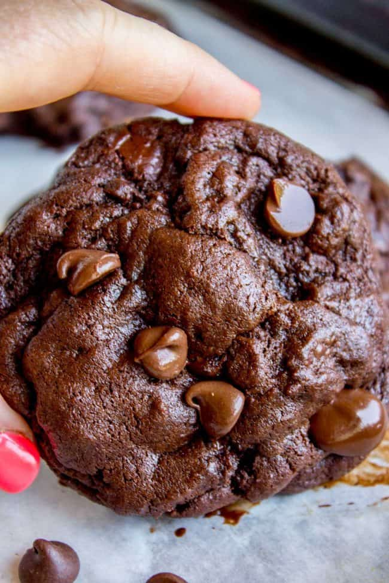
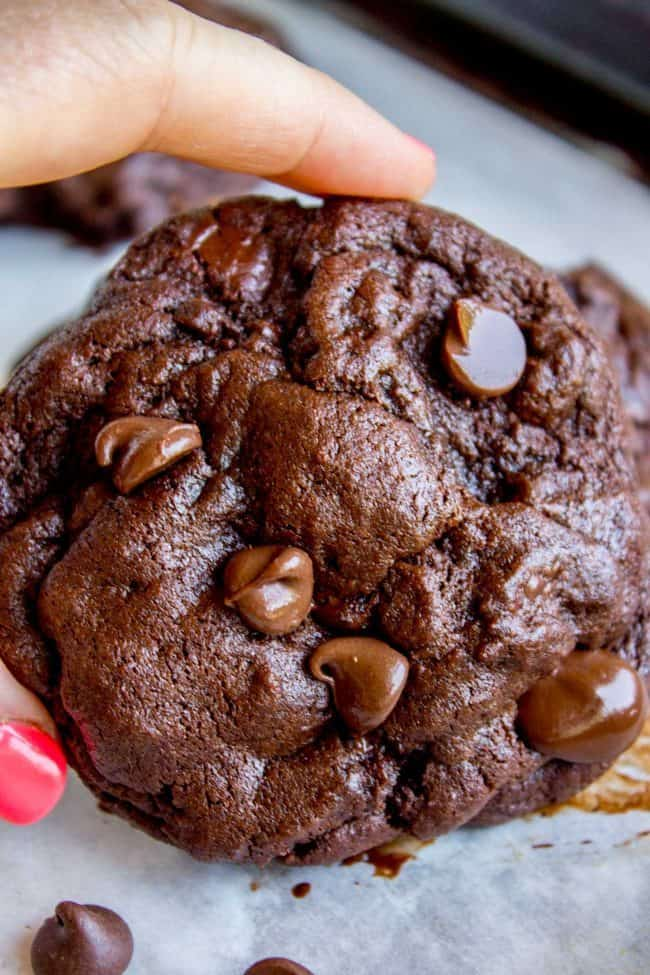
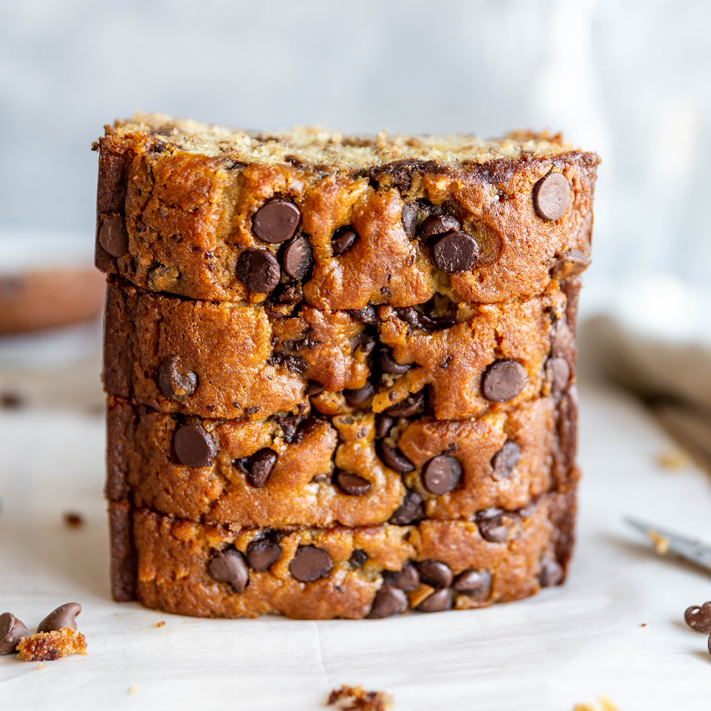
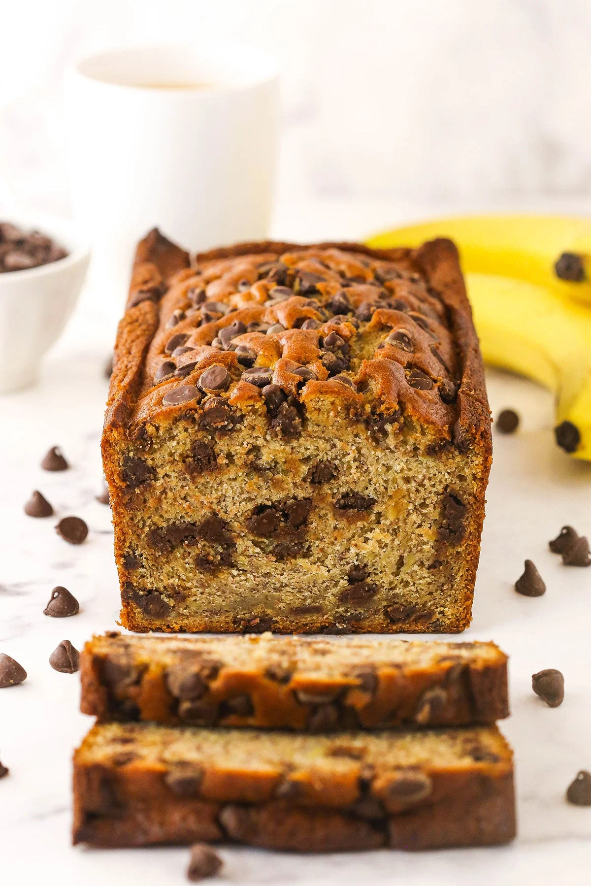
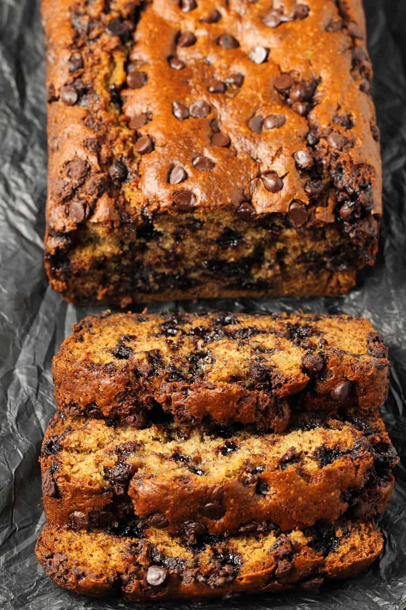

Welcome to our Recipes section! Here you can find all sorts of information...
Double Chocolate Cookies

Origin: Michigan
Source: Family Recipe
Category: Dessert
These cookies are best enjoyed fresh and are perfect for chocolate lovers everywhere.
Recipe Ingredients
- 1. Unsalted butter
- 2. Granulated sugar
- 3. Packed light or dark brown sugar
- 4. Large egg
- 5. Pure vanilla extract
- 6. Semi-sweet chocolate chunks (melted)
- 7. All-purpose flour
- 8. Natural unsweetened cocoa powder
- 9. Baking soda
- 10. Salt
- 11. Semi-sweet chocolate chunks
Recipe Steps
- 1. In a mixing bowl cream together the butter, granulated sugar, and brown sugar
- 2. Add the egg and vanilla extract and beat well
- 3. Add the melted chocolate
- 4. In a separate bowl combine the flour, baking soda, cocoa powder and salt
- 5. Combine the wet and dry ingredients
- 6. Add the unmelted chocolate chunks
- 7. Form 15 cookies and place on a baking sheet
- 8. Cook for 12 to 13 minutes at 350 degrees
Additional Pictures
 


Chocolate Chip Banana Bread

Origin: American
Source: Chocolate Chip Banana Bread
Category: Lunch
This is a tried-and-tested recipe that I have used numerous times for making the perfect chocolate chip banana bread! Not only does it help utilize the bananas that have slowly overripened at the back of the fridge, it ends up creating an incredibly delicious, and relatively healthy, dessert.
Recipe Ingredients
- 1. Cooking spray
- 2. 2 cups (240 g) all-purpose flour
- 3. 1 tsp. baking soda
- 4. 1/2 tsp. kosher salt
- 5. 1 large egg plus 1 egg yolk
- 6. 1 cup (200 g) granulated sugar
- 7. 1/2 cup (1 stick) unsalted butter, melted
- 8. 1/4 cup sour cream
- 9. 1 tsp. pure vanilla extract
- 10. 3 ripe bananas, mashed
- 11. 1/2 cup chopped toasted walnuts
- 12. 1/2 cup semisweet chocolate chips
Recipe Steps
- 1. Preheat the oven to 350º. Line a 9"-by-5" loaf pan with parchment and grease with cooking spray
- 2. In a medium bowl, whisk flour, baking soda, and salt
- 3. In a large bowl, mix egg, egg yolk, granulated sugar, butter, sour cream, and vanilla. Add bananas and stir until combined. Gradually add dry ingredients to banana mixture until just combined
- 4. Fold in walnuts and chocolate chips and transfer to prepared pan
- 5. Bake bread until a tester inserted into the center comes out clean, about 1 hour. Let cool 10 minutes in pan, then invert onto a wire rack and let cool completely
Additional Pictures


